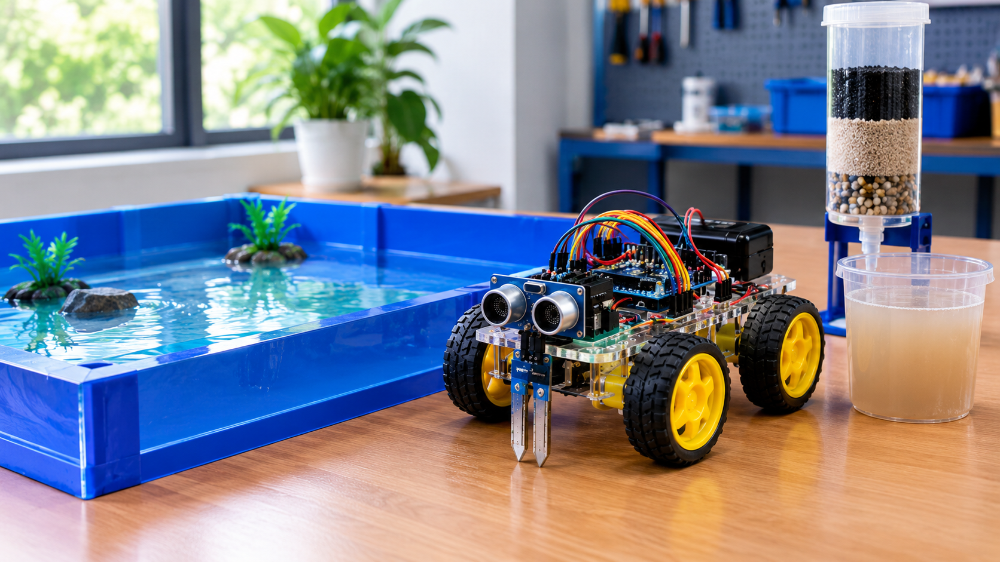

Water testing dashboard
Find out how cloudy your water is.
Enter a turbidity reading or connect the Arduino to get a recommended next step.
🤖 Robot Arena
Demo view
💧 Water Result
Turbidity onlyMeasured turbidity
—NTU
0–<1
Low1–5
Elevated>5
High
Low1–5
Elevated>5
High
Assessment
Waiting for a reading
Provide a turbidity reading to classify the sample and show a preferred treatment approach.
✅ Preferred solution
- Enter a turbidity value or connect the Arduino.
- AquaRescue will recommend a next step.
Safety note: Turbidity measures cloudiness, not germs or toxic chemicals. Even low-turbidity water is not automatically safe to drink. Do not calculate a chlorine dose from turbidity alone; follow the product label and local public-health guidance.
🎛️ Test a Water Sample
Manual or ArduinoArduino not connected. Demo buttons use example readings, not actual sensor data.
📋 Recent Tests
0 testsNo readings yet. Enter a value or try a demo reading.
| Time | NTU | Assessment |
|---|
Guidance basis: WHO guidance targets turbidity below 1 NTU for effective disinfection where achievable; if not achievable, aim below 5 NTU and still disinfect. A turbidity reading by itself cannot certify drinking-water safety.